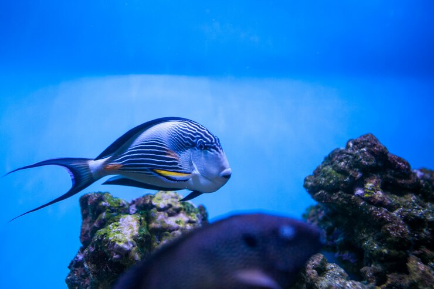
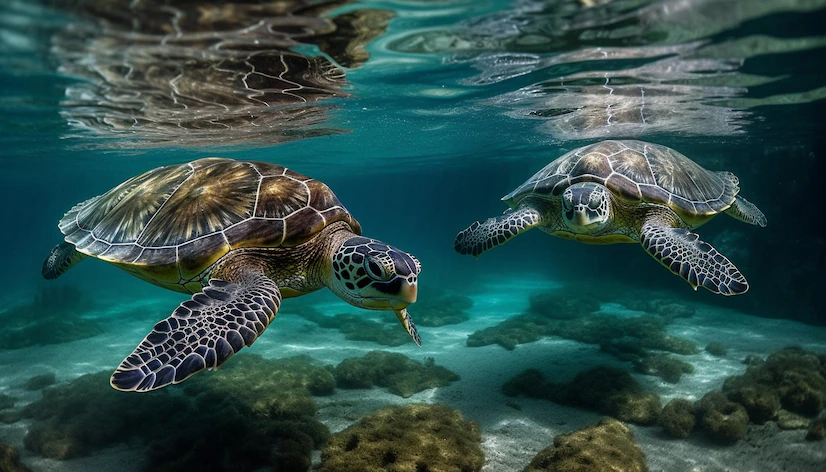
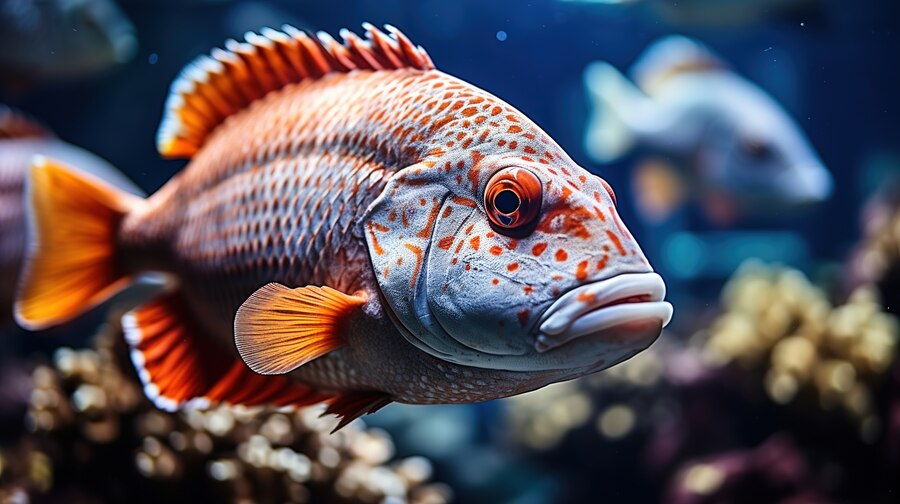

Os oceanos cobrem cerca de 70% da superfície da Terra, produzem mais de metade do oxigênio que respiramos e absorvem grandes quantidades de dióxido de carbono, regulando o clima global. Além disso, a água doce de rios e lagos é essencial para a agricultura, a geração de energia e o abastecimento de água potável para milhões de pessoas.
Ameaças aos Ecossistemas Aquáticos:
Infelizmente, esses ecossistemas vitais estão enfrentando uma série de ameaças, desde a poluição por plásticos e produtos químicos até a pesca excessiva e as mudanças climáticas. A degradação desses habitats não só coloca em risco a vida marinha diversificada, mas também ameaça a subsistência de comunidades costeiras em todo o mundo.



Exemplos de Sucesso:
Contudo, há esperança. Um excelente exemplo de sucesso é o caso das Ilhas Seychelles, que implementaram medidas rigorosas de conservação marinha e regulamentaram a pesca, permitindo que os recifes de coral se recuperassem e a vida marinha prosperasse novamente. Outro exemplo é a Noruega, que investiu em aquicultura sustentável para reduzir a pressão sobre os estoques de peixes selvagens.
Envolvimento Pessoal:
Você também pode fazer a diferença! Reduza o uso de plásticos descartáveis, apoie organizações de conservação marinha e participe de limpezas de praias. Pequenas ações podem causar grandes impactos quando se trata de preservar a vida na água para as gerações futuras.
Lembrete Final
Explorar o ODS 14 é uma jornada que nos leva das profundezas do oceano até nossas ações diárias. Junte-se a nós enquanto mergulhamos em histórias inspiradoras, soluções inovadoras e ações tangíveis que podem ajudar a construir um futuro mais sustentável para todos.